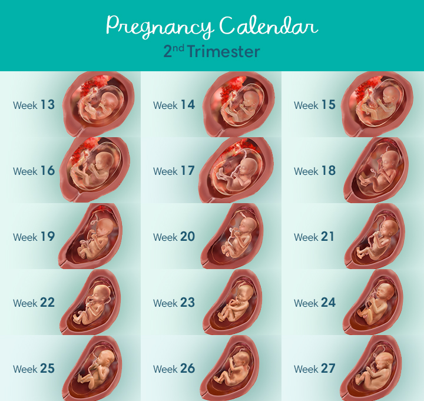
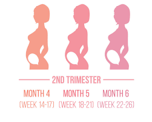

The second trimester of pregnancy is a time when many women will feel energised and well. You will become visibly pregnant, but you won’t be so heavy that getting around is difficult. This is also a time of rapid growth and development for your baby, and you may find yourself busy with health checks and planning for the birth.
Trimesters are a helpful way to think about pregnancy because the changes that happen to you and your baby fall into 3 broad categories of early, middle and late pregnancy, as reflected in the first, second and third trimesters. The second trimester represents the middle part of your pregnancy, from weeks 13 to 26. For many women, one of the best things about this trimester is that nausea might begin to settle. In the second trimester, your baby’s hair, including eyebrows and eyelashes, begins to grow. Muscles and bones continue to develop, allowing more movement. If your baby is a girl, her eggs will develop in her ovaries early in the second trimester. By about week 18, your baby can hear your heartbeat and may even be startled by loud noises. Your baby will grow quickly in the second trimester. You will be able to feel this. It will put pressure on your lungs, stomach, bladder, and kidneys. You may begin to feel your baby move during the fifth month. By the end of the second trimester, you will be able to feel that your baby has resting and alert periods. As a result of the development of taste buds and sensory neurons, your baby will be able to taste and touch during the second trimester. By the end of week 23, your baby probably weighs about a pound. Babies born this early may be able to survive with the help of expert medical care, but they usually have mental and physical disabilities. Your baby’s eyes are sealed shut until the end of the second trimester when your baby starts to blink. By the end of the second trimester, your baby will weigh almost 2 pounds and will be about 1 foot long. By now, all of the essential organs have formed.
Your body will undergo some major changes during the second trimester. Your uterus will grow, and you may feel some discomfort or aches as uterine ligaments stretch. You will start to feel your skin stretch around your belly and your breasts, which may cause mild itching. Some women get stretch marks in these areas, which tend to fade over time. Although your baby weighs less than a kilo, your blood volume will increase to meet the demands of all the growth happening inside you, which will mean you will gain some additional weight.
Pregnancy can be a wonderful and exciting time, but it’s also important to expect to feel some occasional days of heightened anxiety or low mood. Sometimes one or both parents experience difficult emotions during pregnancy, such as being worried about the birth or about coping as a parent. Feelings of anxiety are not uncommon, and some women will experience symptoms of a condition called anxiety disorder. Antenatal depression is a mood disorder that includes intense emotional changes beyond those you might expect during pregnancy. If you are worried about feelings of anxiety, low mood or depression, you could: see your doctor, obstetrician, child health nurse or midwife
 During the second trimester, your baby will grow from being around 7.5cm, and weighing 30 grams in week 13, to around 23cm and 820 grams at week 26. Your baby will be able to move freely within the amniotic sac in your uterus. By about week 19 (or sooner if this isn’t your first pregnancy), you may feel this movement – as a faint tickling or fluttering. During these 3 months, your baby’s organs will continue to develop and the liver, pancreas and kidneys all start to function. This is also the time when babies might start to suck their thumb. By week 20 your baby can hear sounds, including the sound of your heartbeat, and they are learning to recognise your voice, although the ears are not yet fully formed. What can you expect at your antenatal visits? Regular antenatal visits are an important part of staying healthy and making sure your baby is healthy. How often you see your health professional will depend on your personal circumstances, but for many women, visits will be every 4 to 6 weeks. At all visits during your second trimester, you will have your blood pressure checked, and your hands and feet will also be checked for swelling. You might be weighed, have blood taken for tests and have your urine checked. Your doctor or midwife will check your abdomen to monitor your baby’s growth and will listen to your baby’s heartbeat. If you didn’t have an ultrasound in your first trimester, you may be offered one at around 18 to 20 weeks.
Eating well and staying active is as important as ever during pregnancy - it's good for your physical and emotional health, and good for your baby too. Light-to-moderate exercise in pregnancy is usually safe: consider walking, swimming, yoga and stationary cycling in your second trimester. High-impact exercise and activities where there is a risk of falling, getting hurt (especially around the stomach) or overheating are not recommended. Your choice of food during your pregnancy is also important – but that doesn’t mean ‘eating for two’. What you eat during your pregnancy has been shown to affect how your baby grows as well as your baby’s health later in life.